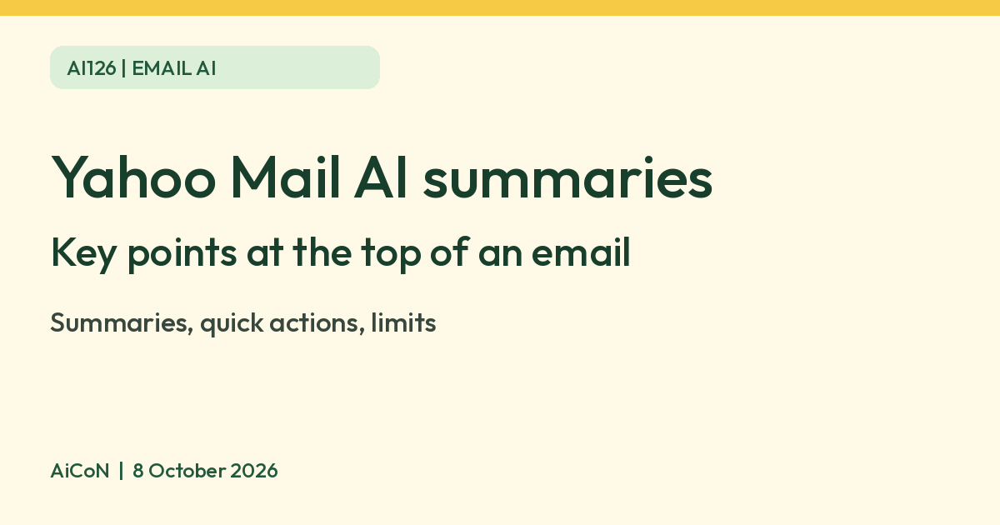

Yahoo Mail AI summaries: the key points of an email at the top
Yahoo says AI summaries in Yahoo Mail give you the important info from an email at the top, with quick actions such as adding an event to your calendar. Yahoo also says some features are not available in all regions, so you may not see them.

What it is
Yahoo's Help pages describe AI-powered message summaries in Yahoo Mail: a short rundown of a message with just the important info. On iPhone, Yahoo says the summary can show things like dates and times of events, travel confirmation details, billing details and verification codes.
What else Yahoo says it does
- Quick-tap actions. From the top of a message you can add an event to your calendar, reply, copy info, add a reminder to pay a bill, or open a link mentioned in the email.
- AI Compose. Yahoo lists five tone options: Improve, Concise, Friendly, Professional and Add Emojis.
How to turn summaries on or off
Yahoo's help page for the new Yahoo Mail on the web gives these steps: click More options, choose Settings, click AI features on the left, then use the Message summaries toggle.
| Cost | Yahoo's Mail page says Yahoo Mail is always free to sign up for and use, with optional paid plans. It does not say which AI features are free or paid, so we make no claim on that. |
|---|---|
| Where | Yahoo has a help page for the iOS app and one for the new web version. |
Limits to know
- Yahoo's overview page says some features are not available in all locales, and if a feature does not appear in your app, it is not available in your region yet. We did not verify which AI features work in India.
- A summary can leave things out or get a detail wrong. For a bill, date or booking, open the original email.
- Do not rely on a summary for verification codes or account security emails. Open the real message and check the sender.
- The summary means an AI reads your email. If you do not want that, use the toggle above.
- We did not test it ourselves.
Frequently asked questions
Can I turn it off?
Yes. Yahoo describes a Message summaries toggle under Settings, AI features.
Is Yahoo Mail free?
Yahoo says the mail service is always free to use, with optional paid plans.
Why don't I see it?
Yahoo says some features are not available in all regions.
Sources: Yahoo Help: Use AI features in the Yahoo Mail app for iOS, Yahoo Help: Turn AI-powered message summaries on or off, Yahoo Mail. Checked 8 October 2026.